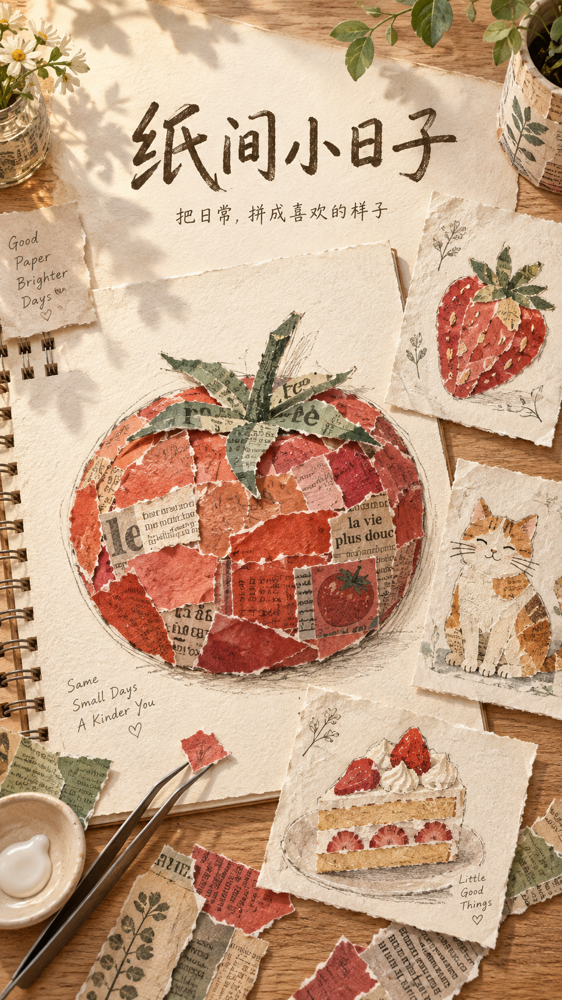
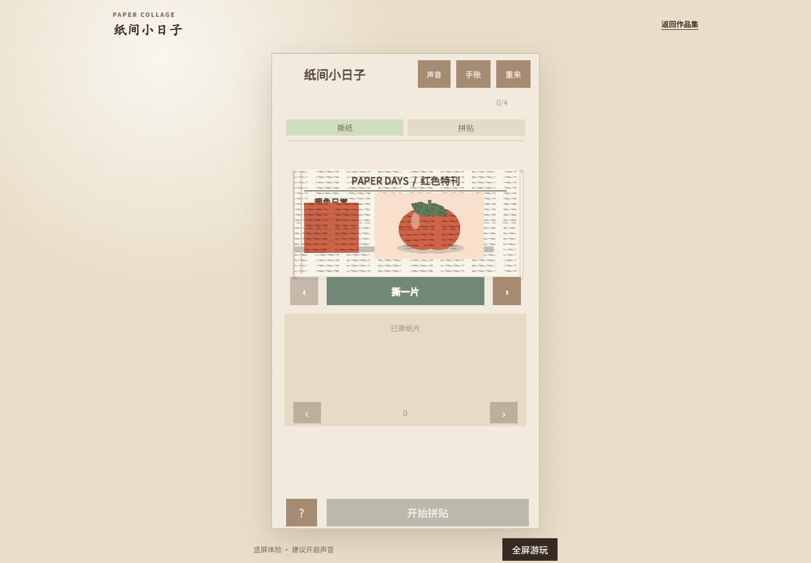

参考线提供方向
整体轮廓和部件参考线保持可见，玩家自主选择制作顺序；裁切仅作用于选中的纸片，并可撤销。
从一张彩色报纸出发，把撕下的纸片变成可以收藏、继续装饰的生活小画。

我负责玩法目标、规则取舍和迭代方向；AI 辅助代码、素材与文档制作，最终内容由我筛选和调整。
整体轮廓和部件参考线保持可见，玩家自主选择制作顺序；裁切仅作用于选中的纸片，并可撤销。
“完成”按真实纸面收藏，不强制裁掉越线部分。外伸叶片、尾巴和流苏可以成为作品的一部分。
番茄、草莓、蛋糕逐步增加颜色与叠层，再进入盘中番茄和沙发睡猫，加入承托物、分组与前后关系。
作品以快照贴入手账，可移动、旋转和缩放，再用蜡笔与文字补充。原作编辑不会改变已贴入的快照。
独立整理步骤增加了正式拼贴前的操作，固定轮廓顺序也限制了自由构图。
取得至少一张纸即可开始拼贴，归色入格自动完成；玩家可随时补纸，保留桌面和余料。部件顺序自由选择，完成后原样收藏。

已有五个主题、纸片与图层操作、整体轮廓裁切、撤销、收藏和手账保存。网页提供 Unity WebGL 版本，首次加载需要下载游戏资源。
当前没有真实广告 SDK，也没有广告收入数据。后续重点观察首次完成所需提示、裁切误解、自由构图意愿和手机触控体验。